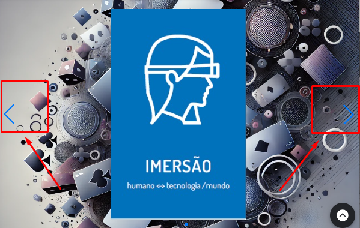
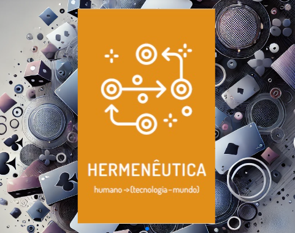
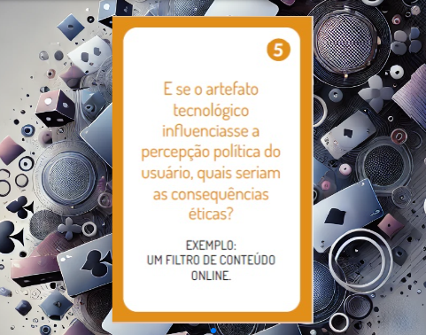

As Cartas de Mediação Tecnológica são uma ferramenta de apoio à reflexão crítica sobre o design de soluções tecnológicas. Elas ajudam equipes a analisar como uma tecnologia pode interferir nas percepções, ações, relações e decisões dentro de um ecossistema sociotécnico.
As cartas servem para provocar perguntas sobre os efeitos de uma solução tecnológica antes, durante ou depois de seu desenvolvimento. Elas ajudam a identificar como o artefato projetado pode influenciar comportamentos, reorganizar responsabilidades, ampliar capacidades, limitar ações ou tornar certas relações mais visíveis.
Seu objetivo é apoiar a pergunta “Para onde queremos ir?”, orientando escolhas de design mais conscientes, responsáveis e atentas às mediações produzidas pela tecnologia.
As Cartas de Mediação Tecnológica são organizadas em formato de carrossel interativo. O conjunto é composto por 7 tipos de mediação tecnológica, cada um representando uma dimensão específica de como a tecnologia interfere nas relações sociotécnicas.
Cada tipo de mediação possui 5 perguntas reflexivas. Ao clicar em uma carta, o sistema apresenta aleatoriamente uma pergunta relacionada àquele tipo de mediação, estimulando diferentes perspectivas de análise durante a discussão.
Os participantes podem definir livremente como desejam explorar as cartas, escolhendo tipos específicos de mediação, navegando pelo carrossel ou utilizando as perguntas de maneira mais aberta e colaborativa conforme o contexto analisado.
Devem ser utilizadas de forma colaborativa por times de desenvolvimento, inovação, produto, pesquisa e ensino. Cada carta convida o grupo a refletir sobre como a solução projetada interfere nas relações entre pessoas, tecnologias, instituições, dados, regras e outros atores do ecossistema.
O uso das cartas favorece discussões críticas sobre impactos, responsabilidades e decisões de design, permitindo que a equipe antecipe possíveis efeitos da tecnologia e refine a solução proposta.
Utilize o carrossel interativo para provocar reflexões críticas sobre as mediações produzidas pela sua solução tecnológica.
Abrir ferramenta1 Escolha uma solução tecnológica que o grupo deseja analisar ou aperfeiçoar.
2 Navegue pelo carrossel e selecione um dos tipos de mediação tecnológica.

3 Clique na carta para gerar aleatoriamente uma pergunta relacionada à mediação escolhida.


4 Discuta coletivamente como aquela mediação aparece na solução projetada.
5 Registre as reflexões, tensões, riscos, responsabilidades e oportunidades identificadas.
6 Utilize os insights produzidos para ajustar o design da solução e tornar a tecnologia mais consciente de seus impactos sociotécnicos.
Copyright © EntangledFuture Toolkit. Todos os direitos reservados.
Criado por Marcelo Soares Loutfi. Distribuído por SaLT